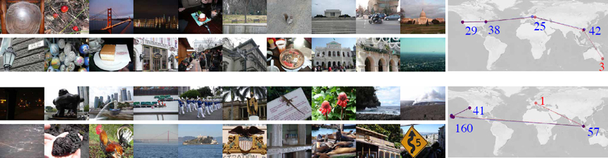
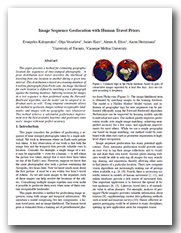

Image Sequence Geolocation with Human Travel Priors
People
- Evangelos Kalogerakis
- Olga Vesselova
- James Hays
- Alexei Efros
- Aaron Hertzmann
Abstract
This paper presents a method for estimating geographic location for sequences of time-stamped photographs. A prior distribution over travel describes the likelihood of traveling from one location to another during a given time interval. This distribution is based on a training database of 6 million photographs from Flickr.com. An image likelihood for each location is defined by matching a test photograph against the training database. Inferring location for images in a test sequence is then performed using the Forward- Backward algorithm, and the model can be adapted to individual users as well. Using temporal constraints allows our method to geolocate images without recognizable landmarks, and images with no geographic cues whatsoever. This method achieves a substantial performance improvement over the best-available baseline, and geolocates some users' images with near-perfect accuracy.
Paper
images2gps.pdf, 2MB(note: this version includes a minor correction in the experimental results)
Citation
Evangelos Kalogerakis, Olga Vesselova, James Hays, Alexei A. Efros, Aaron Hertzmann, "Image Sequence Geolocation with Human Travel Priors",
Proceedings of the IEEE Internaltional Conference on Computer Vision Recognition (ICCV), 2009.
Bibtex
Presentation
images2gps_ICCV2009.pdf, 3.89MB.images2gps_ICCV2009_extended.pdf, 4.65MB.
The first file contains the ICCV 2009 presentation of our method. The second presentation is a more detailed version of the first one.
All Geolocation Results
image2gps_results.zip, 35MB.This archive contains the results for our test dataset as well as the toy datasets of our paper. Please see the README.TXT file in the archive for more details.